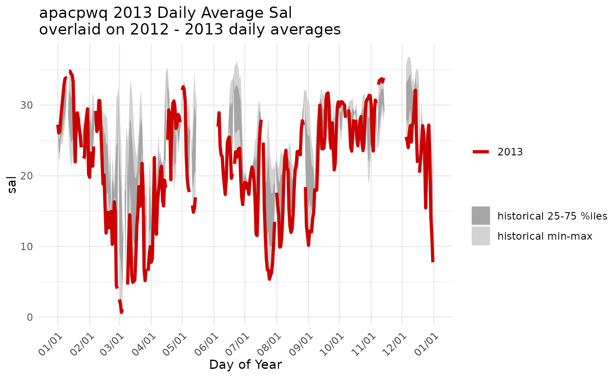

Create a plot of data for a single year overlaid on historical data.
Source:R/plot_quants.R
plot_quants.RdA line for a single year is plotted over ribbons ofquantiles for historical data.
plot_quants(swmpr_in, ...) # S3 method for swmpr plot_quants(swmpr_in, paramtoplot, yr, yrstart, yrend, yaxislab = NULL, yrcolor = "red3", bgcolor1 = "lightgray", bgcolor2 = "gray65", maintitle = NULL, ...)
Arguments
| swmpr_in | input swmpr object. |
|---|---|
| ... | additional arguments passed to or from other methods |
| paramtoplot | chr string of parameter to plot |
| yr | numeric of year to feature as a line on the plot |
| yrstart | numeric of year to begin range of comparison data |
| yrend | numeric of year to end range of comparison data |
| yaxislab | chr string for y-axis albel. Default is |
| yrcolor | chr string of line color for year of interest |
| bgcolor1 | chr string of color for outer 50% of data range |
| bgcolor2 | chr string of color for middle 50% of data range. |
| maintitle | chr string of plot title. Default pastes together site name, parameter name, year to feature, and range of years to use for comparison, e.g. 'GNDBHWQ 2017 Daily Average Temp overlaid on 2006-2016 daily averages'. |
Value
A a ggplot2 object.
Details
The plot is based on aggregates of daily average values for the entire time series. Quantiles (min, 25%, 75%, max) for each individual calendar day (01/01, 01/02, ... 12/31) are used to generate a ribbon plot of historical data and the selected year in yr is plotted as a line over the ribbon for historical context.
required packages: dplyr, lubridate, ggplot2, tibble
Author
Kimberly Cressman, Marcus Beck
Examples
# qaqc dat <- qaqc(apacpwq) # generate a plot of salinity for 2013 overlaid on 2012-2013 data plot_quants(dat, 'sal', yr = 2013, yrstart = 2012, yrend = 2013)#> Warning: `select_()` is deprecated as of dplyr 0.7.0. #> Please use `select()` instead. #> This warning is displayed once every 8 hours. #> Call `lifecycle::last_warnings()` to see where this warning was generated.# change some of the defaults plot_quants(dat, 'sal', yr = 2013, yrstart = 2012, yrend = 2013, bgcolor1 = 'lightsteelblue2', bgcolor2 = 'lightsteelblue4', yaxislab = 'Salinity (psu)')